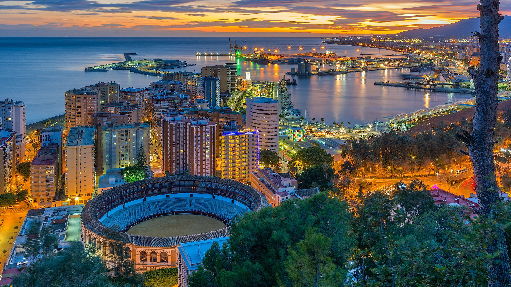

Bienvenidos a Málaga
Explora la belleza y la cultura de Málaga, desde su historia hasta su deliciosa gastronomía.
Pasos a seguir antes de visitar un lugar
- Investigar horarios y líneas de autobuses: Antes de salir, consulta las líneas de autobuses y los horarios de transporte público para llegar a los principales lugares turísticos. Puedes usar aplicaciones o consultar en las estaciones de bus.
- Comprobar precios de entradas a museos y atracciones: Asegúrate de verificar los precios de entrada a los lugares que deseas visitar, como el Museo Picasso, la Alcazaba o el Teatro Romano. Algunos lugares tienen descuentos para estudiantes o entradas gratuitas en ciertos días.
- Revisar las condiciones climáticas: Consulta el pronóstico del tiempo para elegir el mejor día para visitar los lugares al aire libre como el Castillo de Gibralfaro o las playas de Málaga.
- Planificar el recorrido: Organiza tu día para que puedas ver la mayor cantidad de lugares turísticos sin perder tiempo. Asegúrate de verificar los horarios de apertura y cierre de cada atracción para evitar contratiempos.
- Verificar la disponibilidad de tickets online: Para evitar largas filas, compra entradas en línea con anticipación, especialmente en lugares populares como el Museo Picasso o la Alcazaba.
- Revisar opciones de transporte para moverse por la ciudad: Además de los autobuses, verifica si hay tranvías o alquiler de bicicletas que puedan facilitar tu traslado entre los puntos turísticos.
- Consultar recomendaciones de restaurantes locales: Investiga restaurantes cercanos a los sitios turísticos que desees visitar para probar la gastronomía local, como los espetos de sardinas o el ajoblanco.
- Tomar en cuenta el horario de comidas: En España, las comidas suelen ser en horarios específicos (almuerzo de 13:30 a 15:30 y cena a partir de las 20:00). Planifica tus visitas para aprovechar estos horarios.
- Empacar lo necesario: Lleva una botella de agua, protector solar, una cámara y calzado cómodo para caminar, ya que muchos lugares turísticos requieren largas caminatas.